Since 2014, I have been working with couples who marry in Bordeaux, across Gironde and well beyond. More than a hundred weddings later, my role as a wedding planner remains the same: turning your wishes into a seamless, elegant and deeply personal day, while you enjoy every moment.
As a certified Wedding Designer (Wedding Academy), I bring planning, design and coordination together under one signature. Here is exactly how I work, what each service includes and what budget to expect.
Why hire a wedding planner in Bordeaux?
The Bordeaux region offers some of the most beautiful wedding settings in France: châteaux and wine estates in the Médoc, Saint-Émilion or Entre-deux-Mers, ocean-view venues on the Arcachon Bay and Cap Ferret, characterful houses in the Dordogne. The flip side: the finest venues and most sought-after suppliers are often booked more than a year ahead.
Working with a Bordeaux-based wedding planner means benefiting from a trusted address book, venues I know inside out and suppliers I have worked with for years. It also saves you precious time on the region’s specific logistics: château access, shuttles, guest accommodation, a rain plan… Getting married in the Bordeaux region then becomes a pleasure, not an obstacle course.
My three services
Signature: planning, design and the wedding day, from €6,900
The most complete service. I am by your side from the venue search to the last guest: choosing and managing suppliers, budget, timeline, then designing a bespoke world for your day (set design, decoration, sourcing, making and installation). The day before and on the day itself, I coordinate everything so that all you have to do is live your wedding.
Collection: planning and the wedding day, from €5,000
For couples who already have a clear idea of their decor, or who wish to entrust it to another artisan. I take care of the full preparations: venue search, choosing and managing suppliers, budget follow-up, timeline, then coordination the day before and on the wedding day.
Sérénité: wedding-day coordination, from €2,200
You have planned your wedding yourselves and want to live it to the full. We meet four months before the date: I get in touch with each of your suppliers, build the detailed running order of the day, then coordinate the wedding day from start to finish. As an option, I can also design and install your decoration, from €2,000.
All the details are on the services and pricing page.


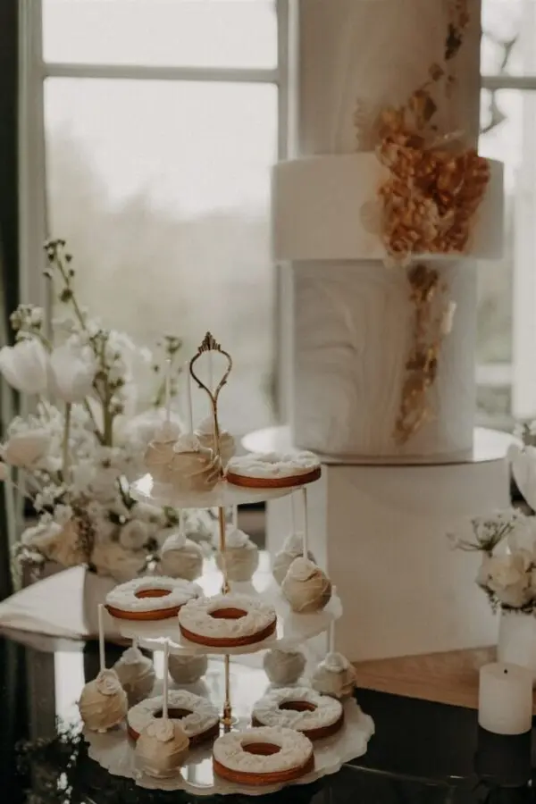
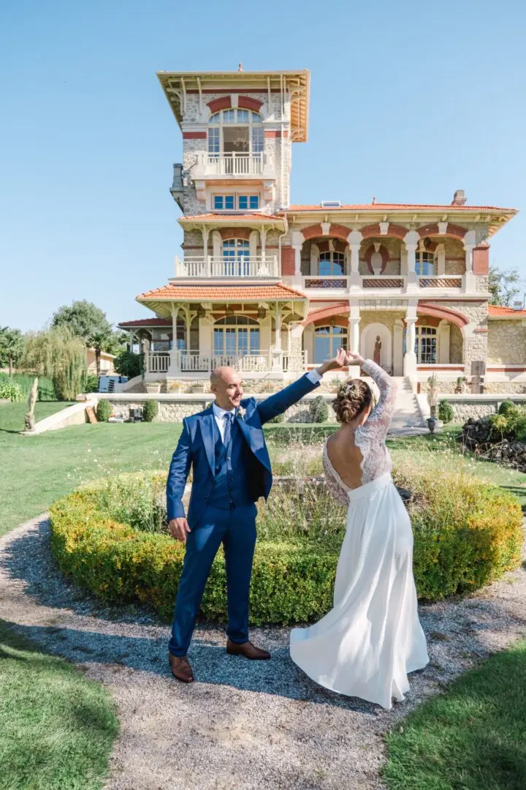
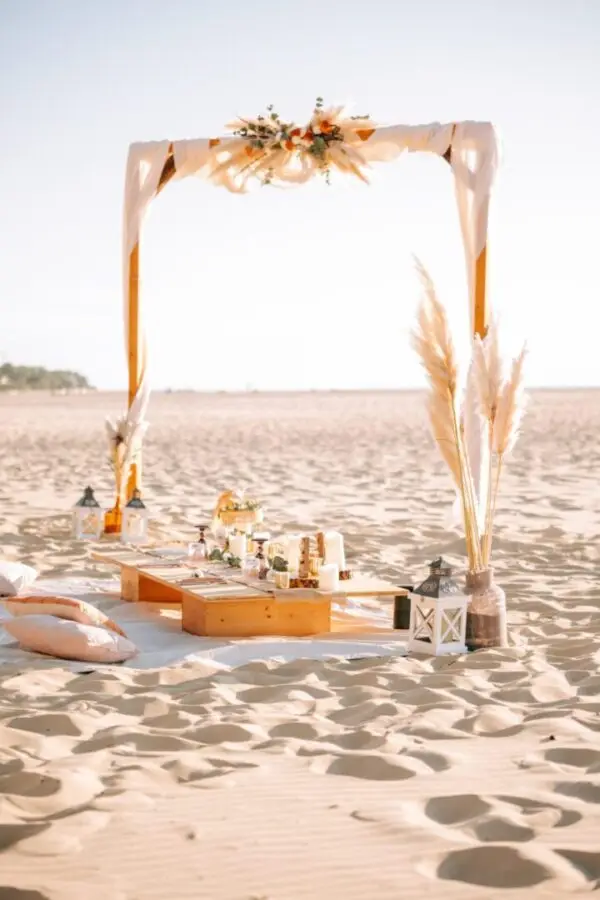

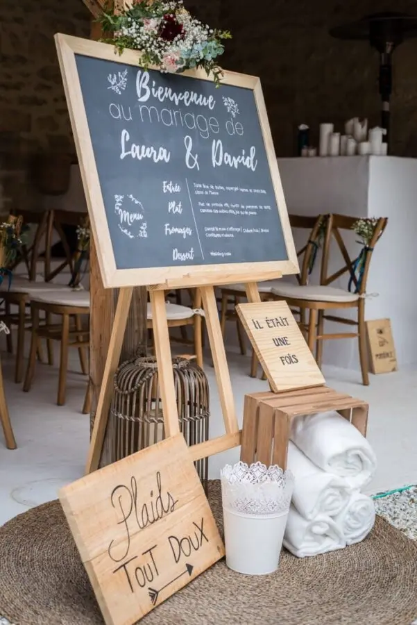
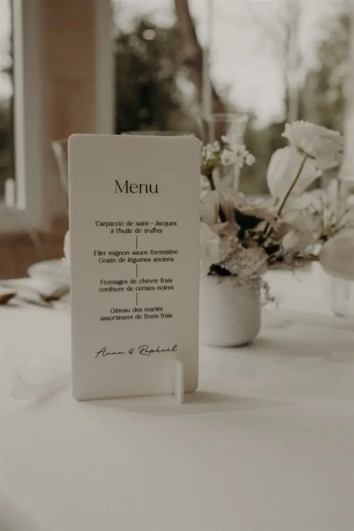
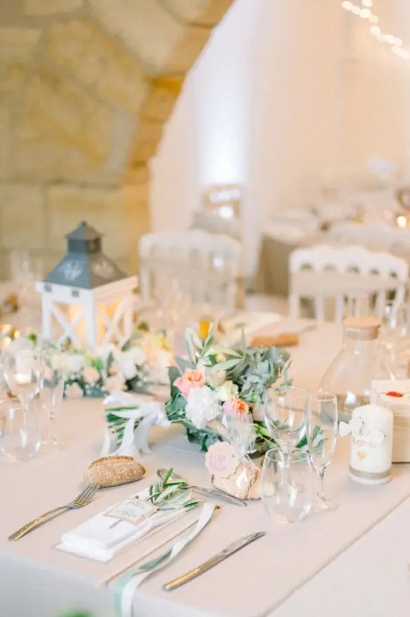
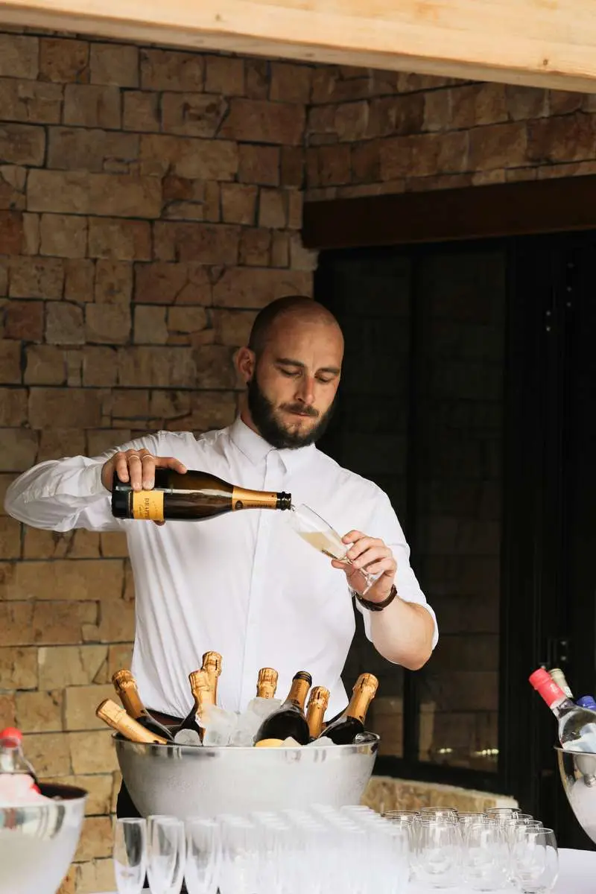
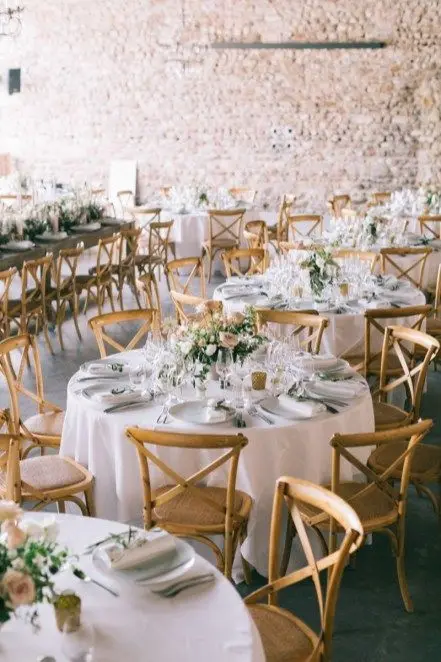

How planning your wedding works
1. Our first conversation. You tell me your story, your wishes, your guest count and your budget. I tell you honestly how I can help.
2. A tailored proposal. I send you a detailed quote suited to your project and the service you choose.
3. Venue and suppliers. I present a selection of venues and suppliers that suit you, organise the visits and negotiate on your behalf.
4. Design. Mood board, palette, textures, flowers, lighting: I create a coherent world, from the invitations to the last detail on the table.
5. The timeline. Every step is dated and followed up, so you move forward calmly without forgetting anything.
6. The day before and the wedding day. Set-up, welcoming suppliers, handling the unexpected and the timing: I am there from morning to evening so that everything goes to plan.
Wedding planner and wedding designer
Planning is essential; giving your day a soul is what makes it unforgettable. Being both a planner and a wedding designer lets me think of your wedding as a whole: the venue, the light, the flowers, the table, the rhythm of the day. Every wedding I orchestrate is unique, a reflection of you, never a copy of a previous one. To get a feel for it, discover some of the weddings I have planned.
Questions I am often asked
When should you book your wedding planner?
For Signature or Collection, ideally 12 to 18 months before the date, when you start looking for your venue. For Sérénité, simply book before our kick-off meeting, four months before the wedding. Dates from May to September go quickly: it is best to get in touch early.
Do you work outside Bordeaux?
Yes. I plan weddings throughout Gironde, on the Arcachon Bay and Cap Ferret, in the Saint-Émilion and Médoc vineyards, in the Dordogne, the Basque Country and across France. We discuss it together from our very first conversation.
Do you work with couples living abroad?
With pleasure, and in English. Many of my couples plan their wedding from abroad: we work by video call, I visit venues for you and become your eyes and hands on the ground.
How much does a wedding planner in Bordeaux cost?
At LOVELY DAY EVENT, wedding-day coordination starts at €2,200, full planning with the wedding day at €5,000 and the Signature service, including design and decoration, at €6,900. The final price depends on your project: guest count, venue, length of the event and level of personalisation. To plan your budget well, read my advice on setting your wedding budget.
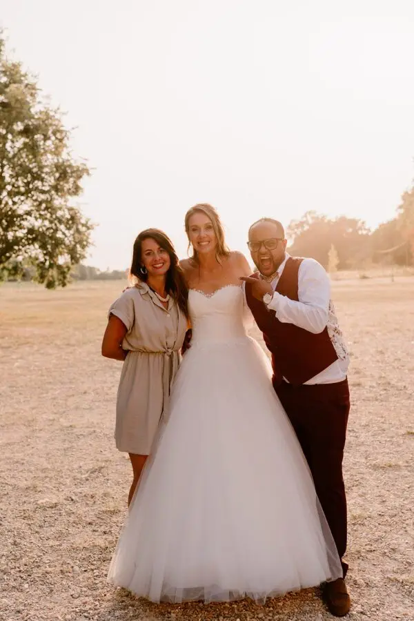
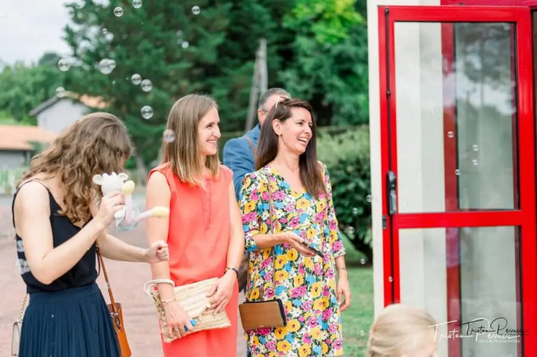
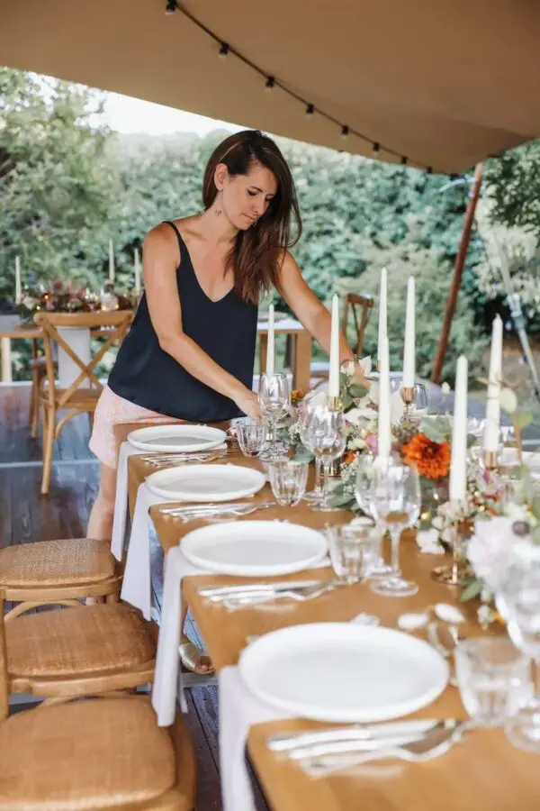
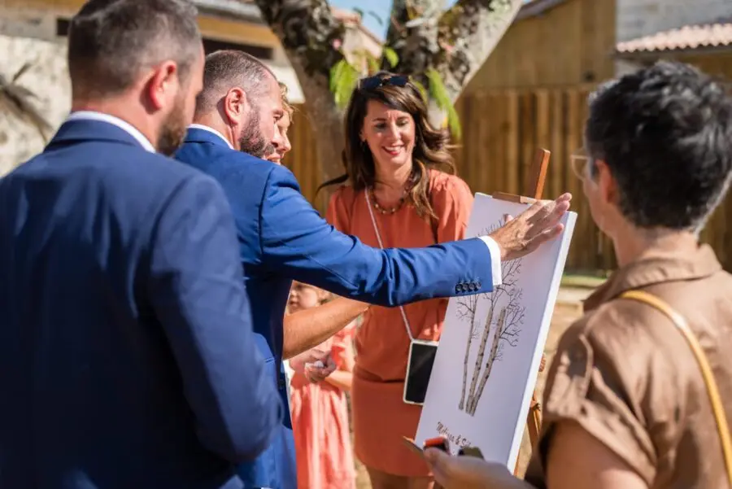

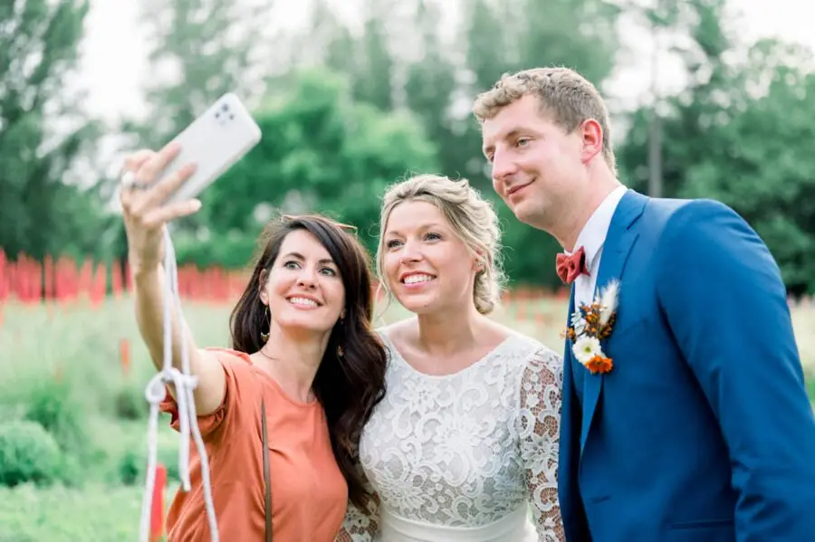
Because some moments deserve to be unforgettable.
Alexandra Ambert
Getting married in Bordeaux, Gironde or elsewhere in France? Tell me about your project: I will reply personally.